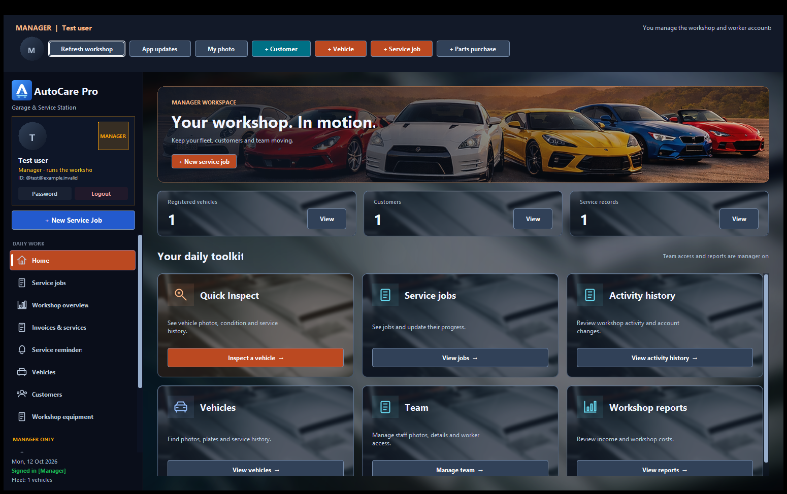

Every job, every stage.
Track pending inspections, work in progress and completed services. Keep the team aligned as each job moves through the workshop.
SERVICE JOBSBUILT FOR THE WORKSHOP FLOOR
From the first inspection to the final invoice. Bring your jobs, vehicles and team into one shared workspace.

Made for the way
your team works.
LESS ADMIN. MORE PROGRESS.
A desktop app for the everyday work of a garage — with shared records for the manager and every worker.
Track pending inspections, work in progress and completed services. Keep the team aligned as each job moves through the workshop.
SERVICE JOBSManagers and linked workers see the same workshop data. Open sessions refresh service changes automatically while you work.
MANAGER + WORKERKeep customer details, vehicle records, inspection stages and service history together. Find the information you need before the next job.
VEHICLES + CUSTOMERSSee maintenance reminders, review parts and labour costs, and export service invoices as PDFs. Fewer loose ends at the end of the day.
REMINDERS + INVOICESA CLOSER LOOK
Real screens from AutoCare Pro.
Explore the tools your team will use.
Start with a clear overview, then jump straight into jobs, vehicles and team tools.
DEMO DATA SHOWNA SIMPLE START
Choose the right installer, sign in, and give your team one place to work.
Choose your versionJava is already included in the installer. Pick the Mac package that matches your chip.
Managers register and confirm their email, then create worker logins from the Team section.
Workers use individual logins created by their manager. Shared services refresh automatically across linked accounts.
LET’S GET TO WORK
Download AutoCare Pro for your computer. Version 1.0.7.
For 64-bit Windows PCs
Download for Windows MSI installer · Java includedFor Macs with M-series chips
Download for M-series PKG installer · Java includedFor Macs with Intel processors
Download for Intel PKG installer · Java includedInternet connection required. Mac builds tested on macOS 15. Installers are unsigned.
Release notes & all downloadsGOOD TO KNOW
Open the Apple menu and choose About This Mac. If it lists an Apple M-series chip, choose Apple Silicon. If it lists an Intel processor, choose Intel.
No. The Windows MSI and both Mac PKG installers include the Java runtime needed by AutoCare Pro.
Workers are linked to their manager’s workshop. Service records are shared through Supabase, and open app sessions check for changes every 10 seconds and when switching sections. Refresh is paused while a modal editing form is open.
When the app opens, it checks for a newer release. Available updates are downloaded and verified, then the app asks whether to install. On Mac, it selects the package for your chip and opens macOS Installer after you accept. You can also check using App updates inside the app.
Workshop records and photos are stored in Supabase. Each manager has a separate workshop, and workers access the workshop their manager linked them to. The app needs an internet connection to sign in and use shared records.
The current installers are unsigned, so Windows or macOS may show a security warning. Verify the download source and follow your organization’s installation policy. Code signing and notarization have not been completed.